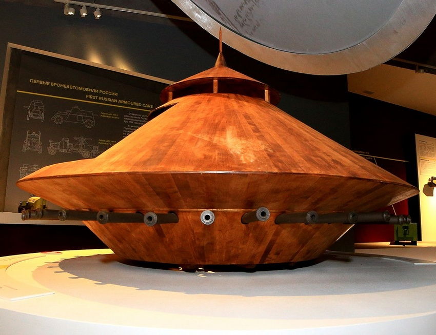
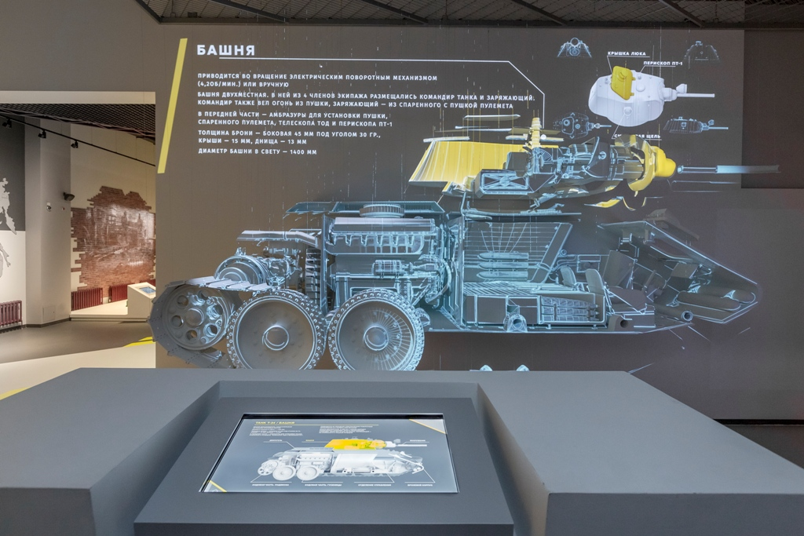
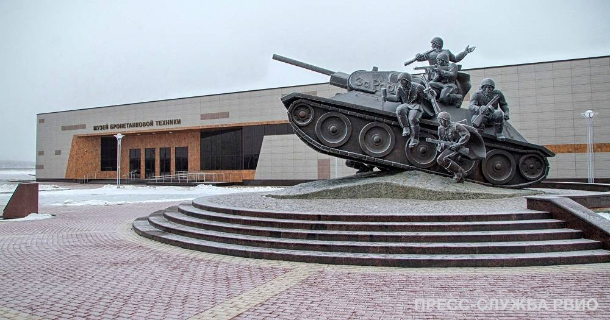

Музей бронетанковой техники
- Режим работы: С 10:00 до 17:00, понедельник - выходной
- Стоимость услуг: ознакомьтесь с перечнем услуг на официальном сайте
- Местоположение: Парковая ул., 47, Прохоровка, Белгородская обл.
Общая площадь «Музея бронетанковой техники» составляет 2830 квадратных метров, экспозиционная — 1500 квадратных метров. Основная цель экспозиции — воссоздание полной картины развития и истории танкостроения от периода античности и средневековья до наших дней. В Музее бронетанковой техники экспозиция и интерьеры гармонично сочетаются с экспонатами. Экспозиция расположилась в четырех залах. Большое внимание уделено навигации, а также архитектуре залов, между которыми отсутствует жесткое архитектурное разграничение, что позволяет прочувствовать переход одной эпохи в другую.  В музее присутствуют самые современные аудио-гиды, которые автоматически синхронизированы с контентом, анимированные тени с датчиками движения. Система аудиогидов завязана с общим сценарием и является частью всего аудиовизуального комплекса. В каждом зале установлены сенсорные экраны, всего в музее их 18.  На сегодняшний день полностью обустроены и укомплектованы три помещения под симуляторы военной техники: БТР-82А, интерактивный класс с игровыми обучающими программами и симуляторами танка Т-90, стрелковый тир, который укомплектован имитаторами оружия, а именно: АК-103, ПКМ, СВД с ПСО-1. Музей располагает необходимыми условиями для обслуживания людей с ограниченными возможностями, включая инвалидов-колясочников. На территории, прилегающей к музею, центральное место занимает скульптурная композиция «Танковый десант». Памятник олицетворяет собой мужество воинов Красной армии.  За зданием музея расположена выставочная площадка бронетехники и артиллерии под открытым небом. На выставочной площадке представлено 15 образцов бронетанковой техники и 9 образцов артиллерийского вооружения. Здесь можно увидеть наиболее значимые в истории бронетехники машины и артиллерийские системы, проследить основные этапы развития бронетехники, танкового вооружения и артиллерийских систем. Более подробную информацию о музее вы сможет узнать на его официальном сайте.